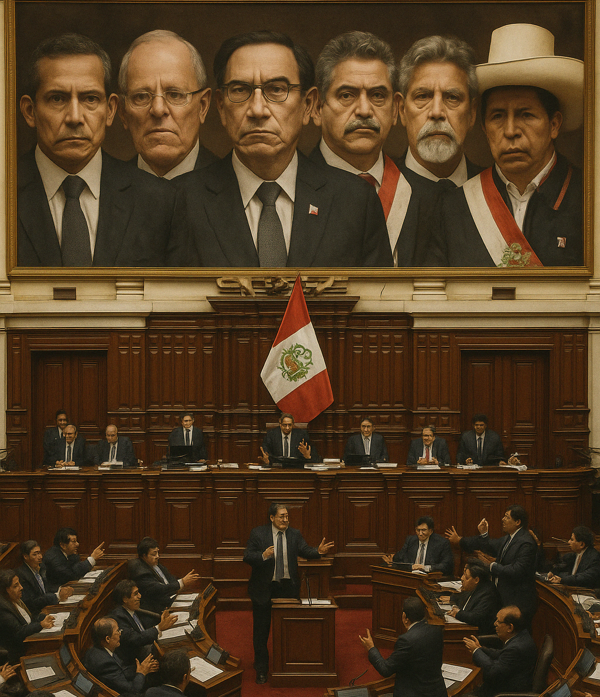
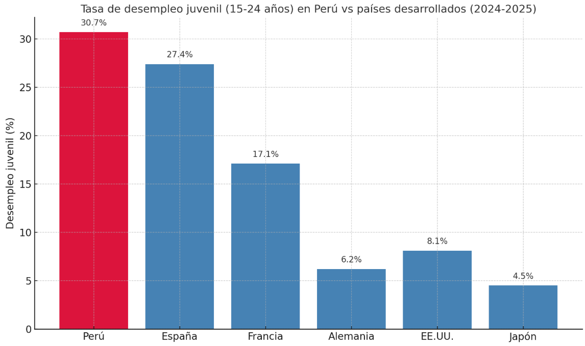
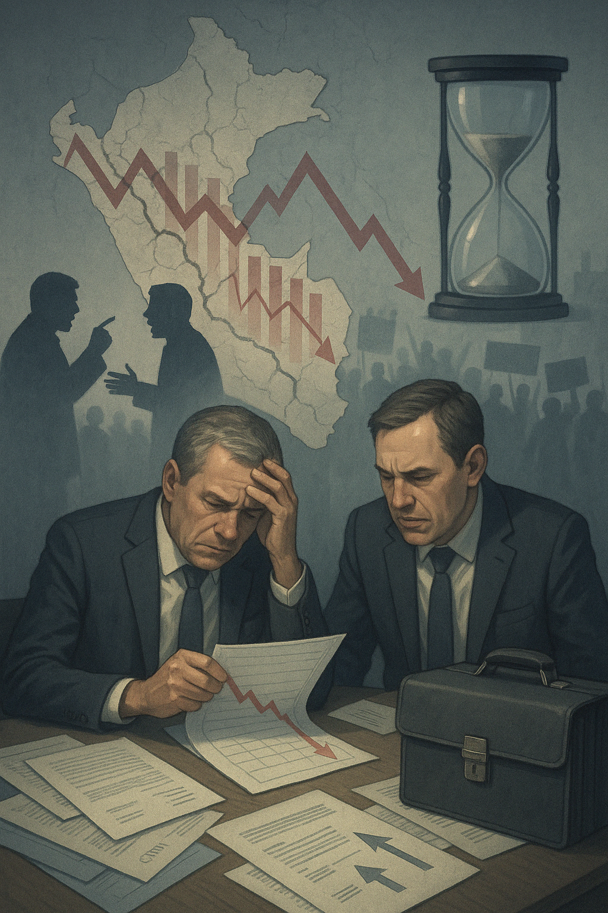

Perú en crisis: entre la incertidumbre política, la economía tambaleante y el miedo en las calles.
Actualmente, el Perú está atravesando un periodo de profunda inestabilidad política, económica y social. Desde 2016, ha experimentado una rápida sucesión de presidentes, lo que refleja una mala organización y relación entre los poderes del Estado , como si fuera una relación tóxica. La actual presidenta, Dina Boluarte, enfrenta graves acusaciones judiciales y también goza de niveles muy bajos de popularidad, debido a su ineptitud y carencia de legitimidad, liderazgo, credibilidad y autoridad moral. (La lista es larga, pero de momento quedémonos con eso).
La economía peruana muestra señales de desaceleración (no debemos confundir con recesión, la desaceleración aún es crecimiento, pero más lento). En febrero de 2025, el crecimiento económico fue del 2,68%, por debajo del 3,5% previsto, debido a la contracción de sectores clave como la minería y la energía. Aunque algunas entidades como Infobae, Reuters y BBVA Research han informado de que se proyecta un crecimiento del 3,1% para este año , la incertidumbre política siempre termina afectando estas cifras.
En paralelo, la inseguridad ciudadana ha alcanzado niveles muy elevados. En 2024, se registraron 2.057 homicidios, frente a los 674 de 2017, según un reporte de la PNP (Policía Nacional del Perú). Las denuncias por extorsión superaron las 22.800, cuatro veces más que las cifras de hace seis años. El miedo se ha convertido en rutina; según Prosegur Perú (2024), el 81% de los ciudadanos cree que puede ser víctima de un delito en los próximos 12 meses.
Este panorama refleja una crisis nacional que afecta profundamente a la sociedad y pone en evidencia la necesidad de reformas estructurales para restaurar la confianza en las instituciones y garantizar la seguridad y el bienestar de la población.
Panorama político: un sistema en constante colapso
La política peruana ha entrado en un ciclo que parece no tener fin. En menos de una década, desde 2016, el Perú ha tenido seis presidentes: Pedro Pablo Kuczynski, Martín Vizcarra, Manuel Merino (¡por solo 5 días!), Francisco Sagasti, Pedro Castillo y ahora Dina Boluarte. Cada uno de ellos peor que el anterior, porque lejos de estabilizar la economía y la situacion política, cada gobierno ha reforzado la imagen de un sistema descompuesto.
El Congreso, en lugar de funcionar como un contrapeso democrático, se ha convertido en uno de los poderes más impopulares y desprestigiados. Según una encuesta del IEP (2025), el 90% de los peruanos desconfía del Congreso, y más del 75% lo considera un obstáculo para el desarrollo. Este desprestigio ha llevado a que algunos ciudadanos lo califiquen como la cloaca del Estado. En esta organización, la corrupción es el problema central; en mayo de 2024, 67 de los 130 congresistas estaban siendo investigados penalmente por corrupción, según datos del Ministerio Público. Además de eso, el Congreso suele aprobar reformas que benefician a los corruptos, o sea, a ellos mismos, como la modificación de la Ley de Extinción de Dominio, una herramienta legal que permite al Estado recuperar bienes obtenidos ilícitamente. Así es como el Congreso, una institución cuestionada por la presencia de miembros investigados por corrupción, vínculos con organizaciones criminales e incluso casos graves como homicidio, además de condenas por incumplir obligaciones parentales, ha ido consolidando mecanismos legales para proteger sus intereses. Mediante reformas y la aprobación de normas, priorizan agendas particulares en lugar del bienestar ciudadano, lo cual fortalece la desconfianza en el sistema político. Los escándalos no se limitan a la corrupción. Hace poco, en diciembre de 2024, se destapó un caso de prostitución dentro de tan aclamada institución, donde se alegó que obligaban a mujeres jóvenes a tener relaciones sexuales con legisladores a cambio de favores políticos. Como siempre, la respuesta del Congreso ha sido duramente criticada por su falta de compromiso para solucionar el problema, centrándose en minimizar los hechos antes de sancionar a los implicados. Esta actitud ha reforzado la percepción de que el Congreso prioriza la autopreservación sobre la rendición de cuentas, agravando su crisis de credibilidad.
Y como si esto fuera poco, la corrupción atraviesa todos los niveles del poder. De los últimos seis presidentes, cinco son investigados por corrupción, algunos con órdenes de prisión preventiva y otro sentenciado. Este patrón típico ha minado la fe ciudadana en las instituciones: el índice de percepción de corrupción de Transparencia Internacional sitúa a Perú con un puntaje de 36 sobre 100, ubicándolo entre los países con mayor nivel de corrupción en América Latina.
Impacto económico: entre el estancamiento y la incertidumbre
Aunque las proyecciones oficiales nos dan una visión esperanzadora, con un repunte del 3,1% para 2025 y, segun el BBVA y el Ministerio de Economía y Finanzas, estiman un 4% , estos números no reflejan la realidad en las calles. La economía peruana ha mostrado signos de desaceleración, con un crecimiento del 2,68% en febrero de 2025, por debajo del 3,5% previsto por analistas. Este estancamiento se atribuye, en parte, a la inestabilidad política crónica que afecta a la confianza empresarial y la inversión.
El desempleo juvenil y la precariedad laboral
El desempleo juvenil en Perú alcanza el 30,7%, y la informalidad laboral afecta al 59% de la población económicamente activa. Los jóvenes enfrentan una tasa de desempleo elevada, con pocos indicios de mejora. Esta situación refleja una "tormenta laboral perfecta" para los jóvenes, quienes, incluso cuando logran acceder al mercado laboral, lo hacen bajo condiciones de informalidad o precariedad.

Gráfica comparativa de la tasa de desempleo juvenil (15-24 años) en Perú frente a varios países desarrollados. Como podemos ver, Perú destaca con una de las tasas más altas, lo que refleja un desafío serio para su juventud y su economía a largo plazo.
Crisis política y su impacto sobre la inversión privada y la confianza empresarial
La inversión privada es uno de los principales motores del crecimiento. En el caso peruano, esta se ha venido desacelerando de forma preocupante en los últimos años, y muchos de estos tienen que ver con la inestabilidad política crónica que atraviesa el país.
Según el Banco Central de Reserva del Perú (BCRP), la inversión privada cayó un 7,3% en 2023, y se esperaba que se recuperara en 2024, pero por cuestiones de incertidumbre institucional, esto aún no se ha concretado. La Cámara de Comercio de Lima advirtió que más del 60% de sus afiliados postergaron proyectos de inversión debido al contexto político incierto. La inversión, sobre todo en sectores intensivos en capital como la minería, la infraestructura o la energía, requiere reglas de juego claras y previsibles. Esto es un rasgo común, ya que la inversión es sumamente volátil frente a cualquier tipo de shock en la economía:
Carlos Adrianzén: “No hay país que pueda atraer capitales si cada tres meses cambia su hoja de ruta. En Perú, se gobierna sin planes y con discursos populistas que ahuyentan a los inversionistas”.
Jorge Guillén, profesor de ESAN: “La inversión es adversa al conflicto. Y en Perú, el conflicto político se ha vuelto una constante. Cada nuevo gobierno arranca con cero legitimidad y cero claridad”.
Casos concretos
En el sector minero, proyectos como Tía María (Arequipa) y Las Bambas (Apurímac) han sufrido paralizaciones constantes no solo por conflictos sociales, sino por falta de apoyo y liderazgo político para resolverlos, lo cual ha congelado miles de millones en inversión extranjera.
El riesgo país de Perú se ha incrementado (medido por el EMBI, indicador de JP Morgan), lo cual significa que el Estado y las empresas peruanas deben pagar intereses más altos por financiamiento internacional. Además, la falta de inversión impacta directamente en la creación de empleo formal y en la productividad del país, perpetuando la informalidad.
Inseguridad ciudadana: Un país tomada por el miedo
En los últimos años, la inseguridad ciudadana en Perú ha dejado de ser un problema de unos pocos para convertirse en una amenaza nacional. Lo que antes se limitaba a ciertas zonas de Lima, hoy alcanza ciudades intermedias, barrios tradicionales y hasta pueblos pequeños. La sensación de vulnerabilidad se ha instalado en la rutina diaria de millones de peruanos.
Según el Instituto Nacional de Estadística e Informática (INEI, 2024), el 32.5% de los hogares peruanos fue víctima de algún delito en el último año, siendo el robo el más común. El Ministerio del Interior (MININTER) reportó un incremento del 27% en casos de extorsión en 2024, con una especial concentración en zonas como Trujillo, Callao y Piura. El sicariato ha dejado de ser exclusivo del crimen organizado en la frontera norte. Hoy se reportan asesinatos por encargo incluso en zonas residenciales de Lima Metropolitana. El crimen organizado extranjero, especialmente de bandas como el Tren de Aragua, ha encontrado en Perú un terreno fértil debido a la falta de control fronterizo y la debilidad institucional.
Pedro Yaranga, analista en temas de seguridad: “El Estado ha perdido el monopolio de la fuerza en varios territorios. Hoy son las mafias quienes dictan las reglas de convivencia”.
Lucía Dammert, socióloga especialista en criminalidad: “El problema no es solo de presencia policial, sino de inteligencia criminal. En Perú, los sistemas de prevención están desarticulados y la coordinación entre niveles de gobierno es casi inexistente”.
Los expertos coinciden en que la declaración de estado de emergencia, el incremento del número de patrulleros y las capturas de bandas no son suficientes. La militarización temporal no resuelve las causas del crimen y, muchas veces, solo traslada el problema a otra zona. El presupuesto para políticas de prevención sigue siendo reducido y no existe una estrategia nacional coherente y sostenida en el tiempo. Hoy en Perú, la ciudadanía no solo desconfía del Congreso o del Presidente, también han perdido la fe en que el Estado los pueda proteger. La inseguridad no es solo un problema de violencia, sino un síntoma de colapso institucional, donde el miedo se ha vuelto cotidiano y la ley, una promesa incumplida.
Entre la desilusión y la posibilidad
Actualmente, el Perú está atravesando una de sus etapas más difíciles. La combinación de una clase política profundamente desprestigiada, una economía que pierde dinamismo y credibilidad por falta de seriedad en las autoridades, y una sociedad atrapada en la inseguridad, genera un ambiente de desesperanza y frustración ciudadana. Resignarse sería un error; la historia del Perú ha demostrado que los ciclos de crisis también abren oportunidades de cambio. Pero ese cambio no viene de forma automática, requiere condiciones y compromisos:
El futuro de Perú no está escrito. El país tiene talento, recursos y una población que, aunque golpeada, sigue creyendo en la posibilidad de un mañana mejor. Pero ese mañana exige esfuerzo, vigilancia y valentía, porque como decía el escritor José María Arguedas, “no hay dolor que no encierre una semilla de rebelión”. Ahora, más que nunca, toca sembrarla.